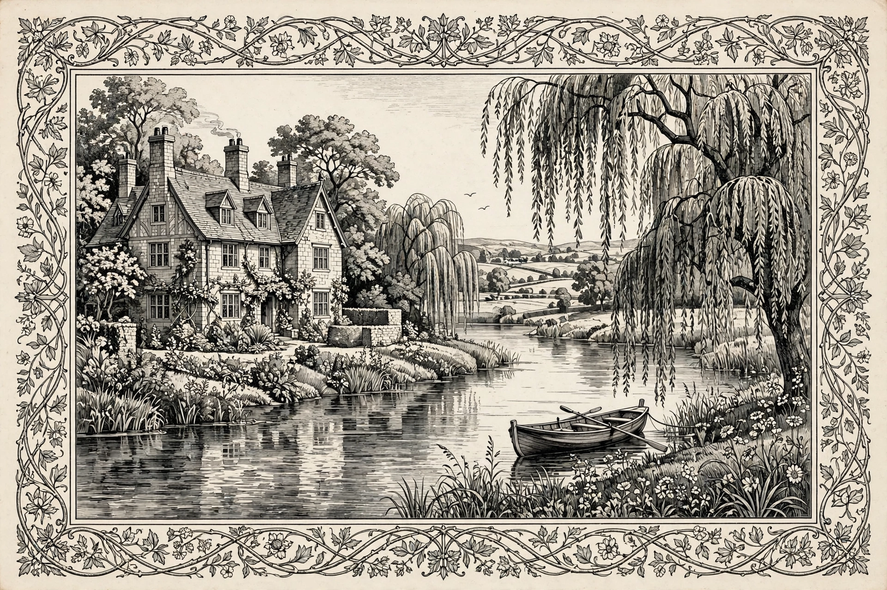

News from Nowhere
| News from Nowhere | |
| Author | William Morris |
|---|---|
| Published | 1890 (serialized in Commonweal); book form 1891 |
| Genre | Utopian romance, soft science fiction |
| Full title | News from Nowhere, or An Epoch of Rest |
News from Nowhere (1890) is a utopian novel by the English textile designer, poet, and socialist activist William Morris. Combining utopian socialism with soft science fiction, it tells of William Guest, who falls asleep after a meeting of the Socialist League and wakes in a future England transformed by revolution into a communist society of common ownership, joyful handicraft, and pastoral beauty. The book was Morris's reply to Edward Bellamy's industrial utopia Looking Backward (1888), whose regimented abundance Morris found repellent.

Plot
Guest wakes in the twenty-second century, in a London freed of pollution, factories, and Parliament — the Houses of Parliament are used to store dung. Guided largely by the boatman Dick Hammond and his great-grandfather, the historian Henry Morson ("Old Hammond"), Guest travels up the Thames toward Kelmscott Manor, Morris's own beloved house in Oxfordshire. Along the way he learns how the transformation came about (a chapter, "How the Change Came", recounts a general strike, massacre in Trafalgar Square, and civil war), and discovers a society without money, private property, formal government, prisons, or compulsory education, where work is pleasurable craft and people live in health to advanced ages. Guest gradually realizes he cannot stay; at a feast near the journey's end he fades from the world and wakes in his own time, resolved to work for the future he has glimpsed — "if others can see it as I have seen it, then it may be called a vision rather than a dream."
Themes and influence
Morris fused Marxist economics with the medievalism of Ruskin: against industrial capitalism he set voluntary labor, art in everyday life, and the abolition of the division between work and pleasure. News from Nowhere became one of the founding texts of British socialism and of the pastoral utopian tradition, influencing the garden-city movement, later "utopian" fiction, and generations of ecological and libertarian-socialist thought. Critics have noted its dated attitudes to women's roles alongside its radical critique of wage labor and consumerism.